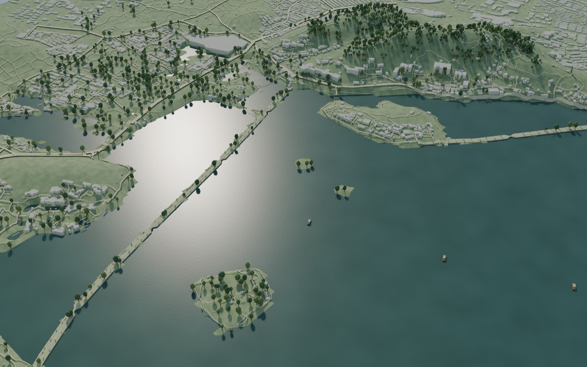
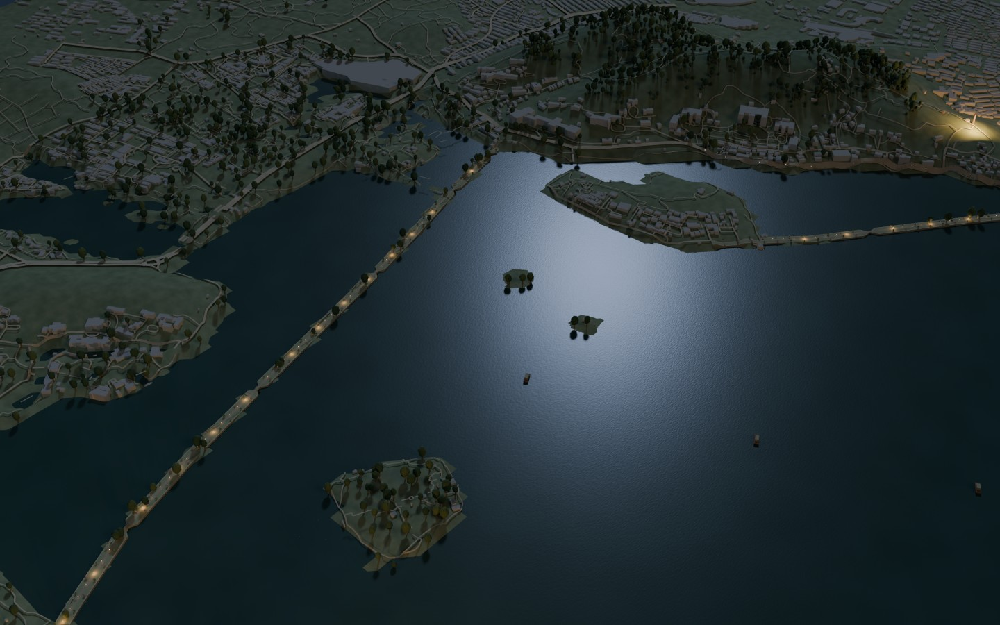

昼夜对照
同一机位下比较场景的光照变化。


项目目标
在一张地图里查看湖面、景点和步道之间的空间关系，并能从整体视图快速定位到感兴趣的地点。
关键交互
用地图和列表查找景点
可以直接点击地图图钉，也可以从景点列表定位。进入地点详情后可以查看介绍和实拍照片。
在同一张地图里对照路线
从宝石山登山入口查看六条路线，通过地图入口或路线按钮聚焦单线。
原型与数据
项目包含可交互网页原型与可编辑 Blender 场景。地形与建筑为简化表达，夜景光照为艺术演绎。
空间数据来自 OpenStreetMap 贡献者、Overture Maps Foundation 和 Copernicus DEM。